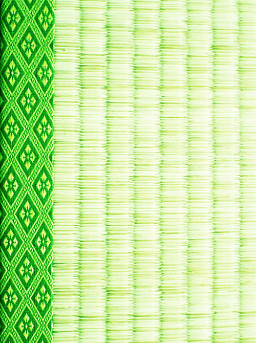

畳は、日本で利用されている伝統的な床材。芯材になる板状の畳床の表面を、イグサを編み込んで出来た敷物状の畳表でくるんで作る。
WAGATATAMI
Tatami is the traditional floor covering material used in Japan. A rush is knitted and it's wrapped in the carpet-like tatami mat which was crowded and made, and the surface of the board-like tatami floor which becomes a core is made.

wagatatami_PT
23/27